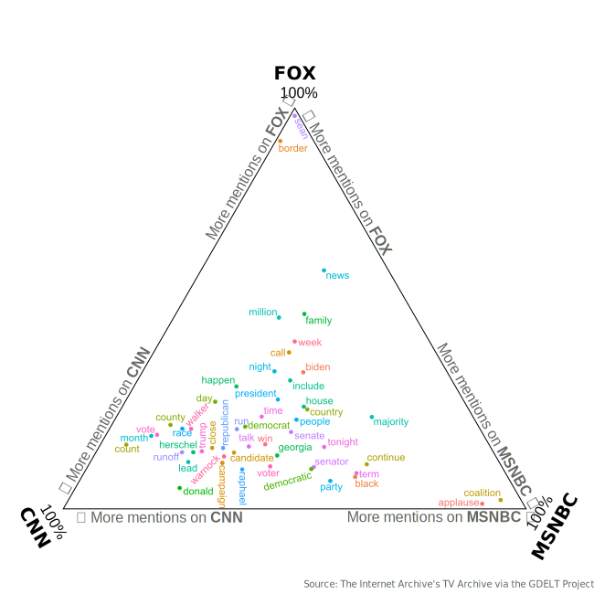

Cable News Coverage of the Georgia Runoffs
A deep dive in content analysis
The Runoffs
After a deadlocked election night back in November that was much too close to call, the Georgia Senate election headed to a runoff. This election was held a few days ago, and finally settled once and for all who would be the newest Senator for Georgia.
Senator Raphael Warnock won re-election to the U.S. Senate. Now, re-election comes with an asterisk, since his previous term was only two years (the result of a special election).
Cable News
I know not everyone is as interested in the process, and even fewer are counting the data themselves. As such, we rely on the media to do this for us - including when to statistically decide when an election is over.
However, these networks are not all the same, so they approach coverage a little differently - in some cases, a lot differently. As we’ll see shortly, the big three cable networks (CNN, MSNBC and FOX News) all took very different courses of coverage.
However, this isn’t really news in and of itself - ask anyone on the street, and they will tell you about the partisan nature of the news media. This is true, to some extent; however, there is a major push back towards the center for a lot of channels. In other words, there is a big move towards delivering straight news, and letting the viewer decide how to interpret the facts.
That said, let’s dive into the similarities and differences in network coverage of the Georgia Runoffs.
Runoff Coverage
Certain words that are used can be very revealing about a network’s coverage - especially if they differ greatly from the other networks.
In my analysis, I took aggregated all of the closed captions from CNN, FOX and MSNBC between the hours of 7 p.m. and 3 a.m. ET. This time period is known as Sales Prime Time, which is the block of coverage which sees the largest audiences across the board (it extends so late in order to capture the West Coast too).
For each 10-minute block (since that is the granularity of data provided by the GDELT Project), any time the word “election” was said, all the words in that block were included. This way, the words most commonly said around “election” will be considered.
These adjacent words were then lemmatized (cleaned and grouped) and fuzzily combined across networks to find the 200 most common mentions.
The top words per network are plotted below:

So what does this mean?
In short - coverage was drastically different across the three networks.
First, FOX did not specialize coverage the way CNN and MSNBC did - they kept their regularly scheduled programming and broke in with the news about the election every so often.
On the other hand, CNN and MSNBC both had a dedicated day and night of election coverage. This is why most of the election-related words are clustered towards the bottom of the triangle.
Towards the FOX side, the words “border” and “sean” appear, which suggests their election coverage was fairly tied in to other news stories. In addition, the sparsity of the upper part of the triangle reinforces the idea that there wasn’t a whole lot of election-related coverage happening on that network.
On the MSNBC side, the words tend to be more general, such as “coalition”, “senator”, “democratic”, etc. This suggests that their coverage was largely focused on the big-picture story of the night: how the Georgia Runoff was going to impact the national balance of power moving forward. This larger-scale analysis served them well - they had the largest audience at the 10p hour when the election was called.1
Lastly, on CNN, the coverage was much more specific, with words such as “runoff”, “Herschel” and “Warnock” appearing frequently. This level of detail is most likely due in large part to their ‘Magic Wall’ formula, since they can quickly and easily drill down into specific parts of the election. “Donald” and “Trump” also appears quite heavily on the CNN side of the diagram, indicating that they were focused on the implication of another Trump-backed candidate losing their election - and what that means for the party.
All in all, the coverage was drastically different on all the networks. I am not sure if this is a by-product of the partisan age in which we live; nevertheless, it remains as important as ever to hear all sorts of viewpoints about the world. Only then will you be able to understand all that is going on around you.
-CH